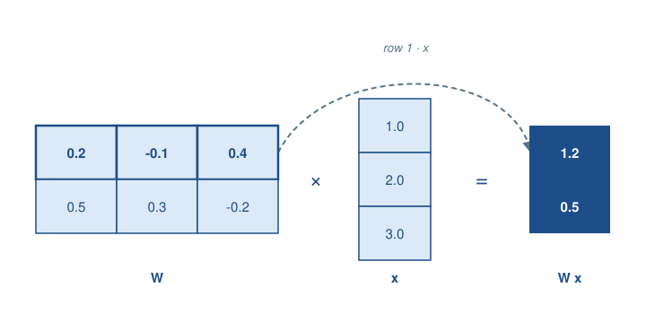
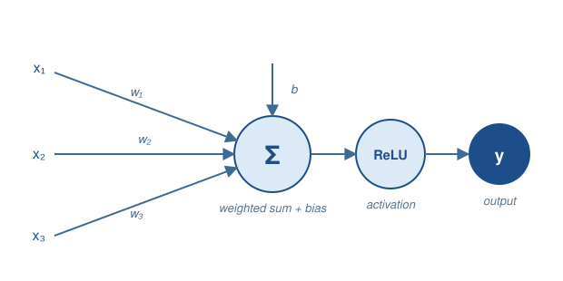
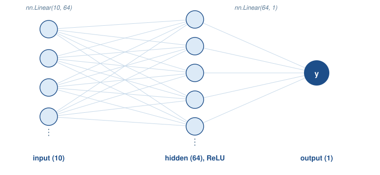
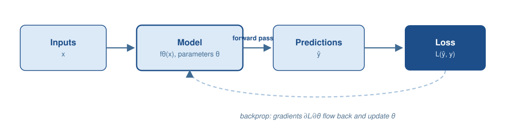

import numpy as np
a = np.array([1.0, 2.0, 3.0])
b = np.array([4.0, 5.0, 6.0])
np.dot(a, b)np.float64(32.0)Deep learning refers to machine learning models built from compositions of differentiable functions that are trained by gradient-based optimization. The practical relevance for agentic systems lies in two roles: deep learning as the foundation for Large Language Models (LLMs), and deep learning components as learned modules inside larger pipelines that combine probabilistic inference with deterministic tools. This appendix starts one level below that: the vector and matrix operations that every layer, loss, and attention computation in this book is built from, but that the models chapter uses without pausing to define.
A vector is simply an ordered list of numbers. An embedding, as used throughout the models chapter, is a vector; so is a single training example’s set of numeric features. Vectors of the same length can be combined element by element, most importantly through the dot product: multiply corresponding entries and sum the results.
import numpy as np
a = np.array([1.0, 2.0, 3.0])
b = np.array([4.0, 5.0, 6.0])
np.dot(a, b)np.float64(32.0)The dot product is the computational core of cosine similarity, defined and used in the models chapter to compare embedding vectors — that formula divides a dot product by the two vectors’ magnitudes, but the dot product itself is exactly the sum computed above.
A matrix is a rectangular array of numbers, and a matrix-vector product generalizes the dot product: each row of the matrix is dotted with the input vector, producing one output number per row. This is precisely what a neural network layer computes. nn.Linear(10, 64), used below, stores a \(64 \times 10\) weight matrix \(W\) and a bias vector \(b\), and maps an input vector \(x\) to \(Wx + b\) — sixty-four dot products, one per output dimension, computed in a single operation. Figure C.1 shows this for a smaller, concrete example: the first row of \(W\) is highlighted and traced through to the first output entry, since that entry is nothing more than that row’s dot product with \(x\) — the same operation as the cosine-similarity numerator above, repeated once per row.

W = np.array([[0.2, -0.1, 0.4], [0.5, 0.3, -0.2]]) # 2x3 weight matrix
x = np.array([1.0, 2.0, 3.0]) # 3-dim input
W @ x # 2-dim outputarray([1.2, 0.5])Real training never processes one input at a time. Stacking several input vectors as the rows of a matrix \(X\) and computing \(XW^\top\) applies the same matrix-vector product to every row at once — a matrix-matrix product is simply a batch of matrix-vector products, computed together. The training loop later in this appendix creates x = torch.randn(32, 10), a batch of 32 examples, for exactly this reason: the 32 is the batch dimension this operation processes in parallel.
X = np.array([[1.0, 2.0, 3.0], [0.0, 1.0, -1.0]]) # a batch of 2 inputs
X @ W.T # 2x2 output: one row per inputarray([[ 1.2, 0.5],
[-0.5, 0.5]])The first row of X is exactly the x used above, and its output row reproduces the earlier result — batching changes nothing about what gets computed per example, only how many examples are computed at once.
Softmax turns a vector of arbitrary real-valued scores into a probability distribution: it exponentiates every entry, then divides by the sum, so the results are all positive and add up to 1. The models chapter uses exactly this operation twice — to turn a language model’s output scores into a distribution over the next token, and to turn attention scores into weights over which positions to attend to.
def softmax(scores):
exp_scores = np.exp(scores - np.max(scores))
return exp_scores / exp_scores.sum()
scores = np.array([2.0, 1.0, 0.1])
probs = softmax(scores)
probs, probs.sum()(array([0.65900114, 0.24243297, 0.09856589]), np.float64(1.0))Subtracting the maximum score before exponentiating is a numerical safeguard: it keeps every exponent at or below zero, which avoids floating-point overflow, without changing the result, since the same constant appears in every term of the numerator and denominator. This is a different fix for a related problem to the scaling used in the models chapter’s attention computation, which divides dot products by \(\sqrt{d_k}\) before the softmax to keep the scores themselves from growing too large as embedding dimensionality increases — but both exist because softmax output is sensitive to the scale of its input.
Once scores become probabilities, cross-entropy loss (introduced below) measures how far that distribution is from the true answer: for a true class \(c\), cross-entropy is simply \(-\log(\text{probs}[c])\) — a small value when the model assigned high probability to the correct class, and a large one when it did not.
true_class = 0
-np.log(probs[true_class])np.float64(0.4170300162778335)Compute softmax(np.array([1.0, 1.0, 1.0])) and confirm all three probabilities are equal. Then compute softmax(np.array([10.0, 1.0, 1.0])) and observe how concentrated the distribution becomes on the largest score. What does this predict about a language model that is very confident in its next token compared to one that is uncertain among several candidates?
Machine Learning problems are commonly framed as the minimization of an expected loss. A dataset provides examples \((x, y)\) drawn from an unknown distribution, and a model \(f_\theta\) parameterized by \(\theta\) predicts \(\hat{y} = f_\theta(x)\). Training selects parameters that minimize an empirical objective, typically an average loss over a training set.
Supervised learning uses labeled targets \(y\). Unsupervised learning uses objectives that do not require explicit targets, such as reconstruction or contrastive learning. Reinforcement Learning optimizes policies based on reward signals and environmental interaction.
Generalization denotes performance on unseen data. Overfitting occurs when a model fits idiosyncrasies of the training set and fails to generalize, while underfitting occurs when the model class cannot capture relevant structure.
An artificial neural network is a parameterized function that maps inputs to outputs through layers. A layer applies an affine transformation — the matrix-vector product \(Wx + b\) introduced above — followed by a nonlinear activation. A multilayer perceptron (MLP) composes such layers to produce increasingly abstract representations. Figure C.2 shows a single unit performing exactly this computation: each input is multiplied by its own weight, the weighted inputs and a bias are summed — one row of \(W\) dotted with \(x\), as in Figure C.1 — and the sum passes through a nonlinear activation, here a ReLU, which simply replaces any negative value with zero.

nn.Sequential
import torch
from torch import nn
model = nn.Sequential(
nn.Linear(10, 64),
nn.ReLU(),
nn.Linear(64, 1),
)
modelSequential(
(0): Linear(in_features=10, out_features=64, bias=True)
(1): ReLU()
(2): Linear(in_features=64, out_features=1, bias=True)
)Listing C.1 stacks many such units into two fully connected layers: an input of 10 values maps to a hidden layer of 64 units with a ReLU activation each, which maps to a single output unit. Figure C.3 draws this topology directly — a representative subset of the input and hidden units, since drawing all 10 and all 64 would be unreadable, but every connection shown is a real weight the network learns.

Forward computation and parameter updates form a repeated cycle, shown in Figure C.4.

The loss function defines the learning signal. Mean squared error is common for regression. Cross-entropy is common for classification, and pairs naturally with the softmax introduced above: cross-entropy compares a predicted probability distribution to the true one, so a classifier’s output layer typically produces logits that a softmax (often fused into the loss for numerical stability) turns into that distribution.
| task | typical output | typical loss |
|---|---|---|
| regression | linear output | mean squared error |
| binary classification | logit | logistic loss |
| multi-class classification | logits | cross-entropy |
Backpropagation computes gradients of the loss with respect to parameters efficiently by applying the chain rule to the computational graph — the backward arc in Figure C.4. Modern deep learning frameworks implement automatic differentiation, which provides gradients for arbitrary compositions of differentiable operations, including the matrix multiplications and softmax introduced above. The method is the standard training mechanism for deep networks in practice, with early formulations and analyses described in Rumelhart et al. (1986).
The chain rule itself is nothing more than multiplying local derivatives along a computational path. Take the simplest possible unit — a single weight and bias, \(\hat{y} = wx + b\) — with a squared-error loss \(L = (\hat{y} - y)^2\). The chain rule gives the gradient of \(L\) with respect to each parameter by differentiating through \(\hat{y}\): \[
\frac{\partial L}{\partial w} = \frac{\partial L}{\partial \hat{y}}
\cdot \frac{\partial \hat{y}}{\partial w} = 2(\hat{y}-y) \cdot x,
\qquad
\frac{\partial L}{\partial b} = \frac{\partial L}{\partial \hat{y}}
\cdot \frac{\partial \hat{y}}{\partial b} = 2(\hat{y}-y).
\] With \(w=1\), \(b=0\), \(x=2\), and a target \(y=5\): \(\hat{y}=2\), \(\partial L/\partial w = 2(2-5)(2) = -12\), and \(\partial L/\partial b =
2(2-5) = -6\). loss.backward() computes exactly this, via automatic differentiation rather than by hand, and should agree with the hand calculation to the last digit. Listing C.2 runs the comparison.
w = torch.tensor(1.0, requires_grad=True)
b = torch.tensor(0.0, requires_grad=True)
x_ = torch.tensor(2.0)
target = torch.tensor(5.0)
y_hat = w * x_ + b
loss = (y_hat - target) ** 2
loss.backward()
w.grad, b.grad(tensor(-12.), tensor(-6.))Every parameter in a network as large as an LLM is updated by the same mechanism: a longer chain of local derivatives, multiplied together, computed automatically instead of by hand — nothing about the underlying rule changes with scale.
Gradient descent updates parameters by moving opposite to the gradient of the loss: \[
\theta \leftarrow \theta - \eta \nabla_\theta L(\theta),
\] where \(\eta\) is the learning rate and \(\nabla_\theta L(\theta)\) is the gradient computed by backpropagation — for the toy neuron above, this is literally w = w - lr * w.grad applied to every parameter at once. Stochastic gradient descent (SGD) approximates the gradient with minibatches of samples — the batches introduced earlier in this appendix — which reduces computation per update and introduces noise that can affect convergence and generalization.
The learning rate controls the update magnitude. Adaptive optimizers such as Adam maintain per-parameter step sizes based on moment estimates and are widely used in practice Kingma and Ba (2015). Listing C.3 runs the update cycle from Figure C.4 for real, eight times in a row, on a fixed batch of synthetic data — the loss printed after every step should decrease.
torch.manual_seed(0)
x = torch.randn(32, 10)
y = torch.randn(32, 1)
model = nn.Sequential(
nn.Linear(10, 64),
nn.ReLU(),
nn.Linear(64, 1),
)
loss_fn = nn.MSELoss()
opt = torch.optim.Adam(model.parameters(), lr=1e-2)
for step in range(8):
opt.zero_grad()
pred = model(x)
loss = loss_fn(pred, y)
loss.backward()
opt.step()
print(f"step {step}: loss = {loss.item():.4f}")step 0: loss = 1.9334
step 1: loss = 1.7661
step 2: loss = 1.6382
step 3: loss = 1.5352
step 4: loss = 1.4425
step 5: loss = 1.3545
step 6: loss = 1.2699
step 7: loss = 1.1895Rerun Listing C.3 with lr=5.0 instead of 1e-2, keeping everything else the same. What happens to the printed loss? Then try a very small learning rate such as 1e-5 over more steps. Relate what you see to why the learning rate is often called the single most consequential hyperparameter in training.
Regularization constrains the effective capacity of the model or stabilizes learning. Weight decay penalizes large parameters and is often implemented as \(L_2\) regularization. Dropout randomly masks activations during training to reduce co-adaptation Srivastava et al. (2014). Batch normalization normalizes intermediate activations to reduce internal covariate shift and improve optimization Ioffe and Szegedy (2015).
Data augmentation is a complementary approach that expands the training distribution by applying label-preserving transformations, particularly in vision.
Evaluation requires a strict separation between training, validation, and test sets. Data leakage can produce optimistic performance estimates that do not transfer to deployment settings.
Architecture choices encode inductive biases that match input structure. The models chapter traces the historical progression from n-gram models through recurrent networks to Transformers; this section stays with the training-mechanics angle — what each family asks of the gradient-descent machinery introduced above.
Convolutional neural networks (CNNs) exploit spatial locality in grid-structured data such as images, through convolution and pooling layers; they became dominant for image classification after large-scale empirical results such as Krizhevsky et al. (2012), with deep residual networks addressing optimization issues in very deep CNN architectures through skip connections He et al. (2016). Neither vision nor CNNs are otherwise a topic in this book.
Recurrent neural networks (RNNs) model sequential structure by carrying a hidden state forward across positions, updating it one token at a time. Backpropagation through this recurrence tends to make gradients vanish or explode over long sequences; Long Short-Term Memory (LSTM) units use learned gates to mitigate the problem and support longer-range dependencies Hochreiter and Schmidhuber (1997). RNNs and LSTMs are trained with the exact same loss-gradient-update cycle as the MLP above, just unrolled across sequence positions, and were the dominant architecture for language modeling before attention.
Transformers replace recurrent state with self-attention, and self-attention is built entirely from the operations introduced at the start of this appendix: queries and keys are compared with dot products, the results are scaled and passed through softmax to obtain attention weights, and those weights combine the values — the mechanism worked through in full in the models chapter, including causal masking and multi-head attention. What matters for this appendix is that none of that changes the training mechanics: a Transformer’s parameters are still updated by backpropagation and gradient descent exactly as in Listing C.3, at a much larger scale. The self-attention formulation was introduced in Vaswani et al. (2017) and underpins essentially every model discussed in this book.
Training is typically organized around a data pipeline, a model, an objective, an optimizer, and an evaluation protocol. Several choices materially affect reproducibility and comparability across runs:
Checkpointing stores model parameters periodically. It supports failure recovery and enables model selection based on validation metrics. Mixed precision training can reduce memory usage and increase throughput on modern accelerators, but it may require numerical safeguards such as loss scaling.
Training instabilities include exploding gradients, divergent loss due to an overly large learning rate — as seen in the exercise above — and sensitivity to initialization. Non-stationary data distributions, mislabeled data, and distribution shift between training and deployment often dominate model performance limitations in applied settings.
The general treatment of deep learning foundations, architectures, and optimization is provided in Goodfellow et al. (2016), while statistical learning perspectives on generalization and evaluation appear in Bishop (2006).